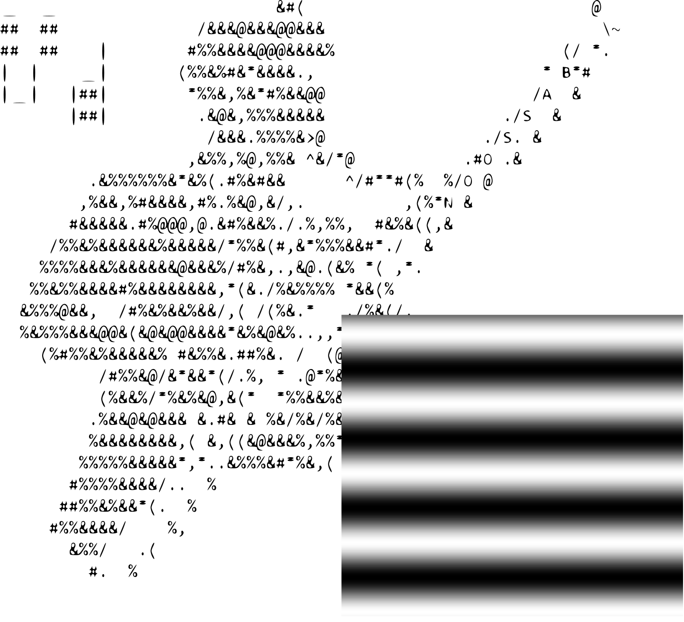

Bassoon

Develop, organize, and deploy vision science experiments.
Bassoon is a python based GUI to easily manage and
deploy visual stimuli built on the Psychopy API.
Installation
Bassoon relies on Python 3 and the Psychopy libraries. Follow these steps to install Bassoon on your local computer:
- Download Bassoon: Download a zipped Bassoon folder here. You can also download or clone directly from the Github repository. Once downloaded, extract the files into a directory on your local computer.
- Download Python 3: Download Python onto your computer using the latest version available here. Ensure that you have selected a Python 3 release.
- Install a Python IDE: This step is not strictly required, but highly recommended. It will allow you to make changes to your local copy of Bassoon, including adding or modifying stimuli. A popular option is VS Code (you can follow these instructions on how to connect VS code to python).
- Install Psychopy: The best practice is to create a virtual environment through which to install psychopy. You will want to install the virtual environment inside of the Bassoon directory on your computer (i.e., in the outermost directory called "Bassoon" in the files that you downloaded above). You can create a virtual environment directly on VS Code by following these instructions. Once you have a virtual environment installed, you can enter
pip install psychopy into your terminal to install Pyschopy and its dependencies. If you are trouble shooting, complete installation instructions for Psychopy can be found here, here (note, Bassoon uses the psychopy python API, so it is not enough to install the standalone version of Psychopy. Instead, you must use one of the manual installation options).
You should now be ready to run Bassoon. Locate the file called main.py, which is located in /Bassoon/src/. Either open this file in your IDE and press run, or run it directly from your terminal (on Windows: python /path/to/main.py). If the Bassoon window launches, then you have success! If you encounter an error (either here or at any further step) make sure you have the neccessary dependencies installed. It is possible that you still need to install the following libraries into your virtual environment:
pip install tkinterpip install pyserialpip install json
The terminal/command prompt is your friend. Read any error messages for hints about possible errors, dependency problems and more.
Installing with Anaconda
The easiest way to make sure your machine has all the dependencies that are required to run Bassoon is to install
Psychopy as an Anaconda environment.
First download and install Anaconda if you do not already
have it. Make sure your installation is set to include python 3+.
Next, install Psychopy as an Anaconda environment. You'll
want to download the .yml file provided by Psychopy. A copy of this file is included in this repository at
Bassoon/help/psychopy (no guarantees this is up to date).
While it's not absolutely critical, it's also a good idea to have an IDE from which to launch, edit, and add to
Bassoon. My preferred IDE is Spyder, but you can choose any. If you do
choose Spyder, it is easy to install into your newly built Psychopy environment: launch the Anaconda Navigator app
and select "environments" from the panel on the lefthand side. If you've successfully installed Psychopy as an
Anaconda environment you should see it listed here. Click on it to load the environment. Next, find the panel for
Spyder in the list of applications and click "install."
Running Bassoon Using Anaconda
To run Bassoon, first download it onto your local device. Then launch the Anaconda command line ('anaconda prompt').
Enter the command 'conda activate psychopy' and then 'CD' to Bassoon/src in your file directory. Enter the command
'python main.py' to run Bassoon from the command line. Alternatively, you can view the Bassoon source files by
entering the command 'spyder'. You can edit and/or run Bassoon from within Spyder (or your preferred IDE). The
Bassoon GUI is launched by running the main.py file.
Using the GUI
To launch the Bassoon GUI, locate and run the main.py file inside Bassoon/src. A welcome message should appear in
the python console and the GUI should launch.
Creating an Experiment
To create an experiment select an item from the dropdown menu under the 'Available Stimuli' header. Press the 'Add
Stimulus' button to load this stimulus into the experiment. The list box shows all the stimuli in the current
experiment in the order that they will be played. Use the Protocol Index button to add a stimulus to a desired index
in the list box. You can access indexes of stimuli that are already in the list box by clicking on their name and
then pressing the right mouse button.
Edit Stimuli
Edit the properties of the stimuli in your experiment by double-clicking on them in the list box or by selecting
them once and pressing the "Edit" button at the bottom of the main window. A second window should open in which
editable properties of the stimulus are listed. The first column specifies the property name, the second column
allows user input to change the property value, and the third column specifies the data type of the property. If the
property is a list the data type will be listed first as list and then as the data type of each list element (e.g.
list of strings). List values should be entered using comma-deliniation inside square brackets (e.g. [a, b, c]).
When you are satisfied with the stimulus properties press 'Apply Changes'. If you've changed a property that affects
the total length of the stimulus, this change will be reflected in the estimated time for both the stimulus and the
entire experiment. If Bassoon is unable to update a certain property a message will be displayed in the console to
reflect the issue. When you're satisfied with the changes you've made to a stimulus, press 'Close Window'.
For programmers, private properties that start with '_' will not appear as editable fields in the second window.
Quick Actions
The Quick Actions menu can be accessed using the ribbon at the top of the main window. Clicking on this button
should open the Quick Actions window, which allows you to execute a hodgepodge of commands for the streamlined
organization of your experiment. Current options include flipping the COMS value (if in use), moving stimuli between
indices, and copying current stimuli to a desired index.
Edit Experiments
Like each stimulus, the experiment as a whole also has properties that can be adjusted by the user. To view the
editable experiment properties open the 'Options' menu at the top of the main window. A second window displaying the
experiment properties should open. In the 'Stimulus Monitor' section select the monitor calibration that you would
like to use for the experiment. Monitor calibrations are pulled from monitors that have been added to the monitor
center on your local copy of Psychopy. You must use the Psychopy GUI (installed with Psychopy) or the Psychopy API
to add, remove, or edit monitors. See here for more
information. Select whether you'd like the stimulus to fill the full screen, and choose the screen number (0
indexed and based on your local machine's display mapping) that you'd like to use. (Note, if your machine has an
intel integrated graphics card it may not be possible to display psychopy windows on any screen but the primary).
The information screen section allows you to choose whether you would like a second window to open during the
experiment that provides information about the progress of the experiment. The monitor and screen options are
analogous to those for the stimulus screen. The experiment options at the bottom of the window allow you to modify
basic features of the stimulus. Here are explanations for just a few of them:
- Manually Initiate Each Protocol: If selected, the user must manually start each stimulus in the
experiment via a key press. Protocols also have a manual initiation property. Changing this check box in the
experiment options window will accordingly modify any stimulus you subsequently add to the experiment in the
main window, but will not change the properties of previously loaded stimuli. To update these, edit their
properties directly.
- Angle Offset: Allows you to enter an angle (in degrees) that all stimuli will be rotated by. This is
helpful if there is a known angular discrepency between the display and viewer, as commonly occurs with
projector based systems.
- Write TTL Pulses: Outputs TTL pulses at the start and stop of each epoch when selected (note: TTL
timing may vary on a stimulus by stimulus basis. E.g. Checkerboard Receptive Field sends a TTL pulse with
each frame flip. See the specific protocol file for details). Choose the serial port to use in the
subsequent dropdown window.
- TTL Port: Select the serial port name to use during the experiment. If none are available the only
dropdown option will read 'No Available Ports'. Uses python Serial library to identify serial ports. Will
not impact the experiment if the "Write TTL Pulses" option is not checked.
- Use FBO: Toggle the checkbox to use a frame buffer object or not. If using, select the appropriate
morph file using the browse button. This feature is necessary when stimuli need to be morphed (e.g.
spherical morphs for dome/planetarium configurations).
- Recompile When Saving: When checked, saving the current experiment will cause each stimulus to be
reloaded, effectively removing any properties that are changed or created when a stimulus is run. All
changes that are made to the stimulus by the user in the current session (i.e. via the edit button or by
double clicking on the stimulus name) will be kept. This setting is automatically turned off when an
experiment is run such that saving after the experiment is run will not delete recently created properties.
It is advised to turn this setting on only when you are saving an experiment sketch, but not data from an
experiment that has been run. If you aren't sure how to handle this setting, it is safest to turn it off.
Once you have made all necessary changes to the experiment, press either the 'Apply Changes' button to use these
settings in the current experiment, or the 'Save & Apply Changes' button to use these settings in the current and
all future experiments. Then press 'Close Window' when ready.
Saving
Once you have loaded all the desired protocols into the experiment and have modified both the protocol and
experiment settings, you may want to save your experiment before running it. Use the 'Save' button at the bottom of
the main window. Save the experiment in the desired location. Saving writes two files: a .experiment file and a
.json file. The .experiment file is a pickled python file that can be reopened in python at any time. It contains
all the data about your current experiment and can also be used to reload the experiment (using the 'Load
Experiment' menu option) in case you ever want to run the same experiment again in Bassoon. The .json file writes
the same data in JSON format and can be used to analyze the experiment outside of python (e.g. in MATLAB). The
experiment and JSON files contain nearly identical data, however there are cases in which the JSON file may not
include python specific data types (e.g. numpy arrays). Once you have saved the experiment the 'Save' button should
appear green in the main window and will remain so until a change is made to the experiment.
Running Experiments
When you're ready to run your experiment, press the 'Run' button in the main window. The experiment should begin
playing. If the user initation feature is turned on, you will have to manually start each stimulus by pressing any
keyboard button (make sure a psychopy window is in focus). Look at the information screen (if available) and console
for updates about the experiment. To pause in the middle of a stimulus, press the 'p' key while a psychopy window is
in focus. Any subsequent key press made with a psychopy window in focus will unpause the stimulus. To quit a
stimulus early, press the 'q' key while a psychopy window is in focus. Pressing q may only exit the current
iteration of the current stimulus, so you may have to press it a number of times to fully exit the experiment.
Once the experiment is done playing a save window will appear. Select where you would like to save the
experiment data. As before, saving will produce both .experiment and .json files. This time, however, there will be
more data included in the files as many properties are created (and changed) during the experiment 'run time'.
Pressing cancel in the save window is not advised, however you will still have a chance to save the full experiment
by pressing save in the main window of the GUI (which should load again once done saving). Make sure the 'recompile
when saving' option is deselected in the options menu before doing so in order to keep all data from the experiment.
Exiting
To exit Bassoon press the 'quit' option in the menu bar on the main window, or simply close the main window.
Building Experiments Programmatically
There are two primary classes in Bassoon: experiments and protocols. To show stimuli, you must first instantiate an
experiment (make sure you're working directory is set to Bassoon/src):
from experiments.experiment import experiment
e = experiment()
Protocols contain stimuli. Each stimulus is a subclass of the protocol superclass. To load a stimulus, say a flash,
use:
from protocols.Flash import Flash
f = Flash()
You can change the properties of a stimulus by directly assigning its attributes:
f.stimTime = 2
Load the stimulus into the experiment when you're done setting its attributes. Stimuli will be played in the order
that they are added to the experiment:
e.addProtocol(f)
Experiment attributes can be similarly adjusted:
e.useInformationMonitor = True
When you're ready, run the experiment:
e.activate()
Bassoon is free to use and community development is encouraged. If used for published science, please consider
including a reference so that others can find us.